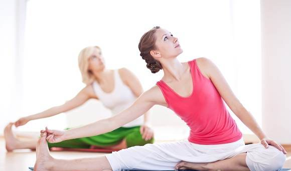
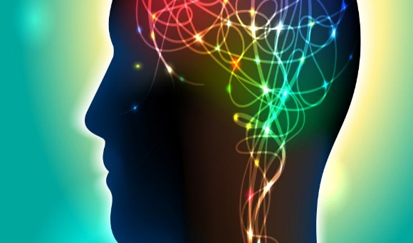

BLOG
13 Unexpected Benefits of Exercise
Many people hit the gym or pound the pavement to improve cardiovascular health, build muscle, and of course, get a rockin' bod, but working out has above-the-neck benefits, too. For the past decade or so, scientists have pondered how exercising can boost brain function. Regardless of age or fitness level (yup, this includes everyone from mall-walkers to marathoners), studies show that making time for exercise provides some serious mental benefits. Get inspired to exercise by reading up on these unexpected ways that working out can benefit mental health, relationships, and lead to a healthier and happier life overall.

1. Reduce stress
Rough day at the office? Take a walk or head to the gym for a quick workout. One of the most common mental benefits of exercise is stress relief. Working up a sweat can help manage physical and mental stress. Exercise also increases concentrations of norepinephrine, a chemical that can moderate the brain's response to stress. So go ahead and get sweaty - working out can reduce stress and boost the body's ability to deal with existing mental tension. Win-win!
2. Boost happy chemicals
Slogging through a few miles on the 'mill can be tough, but it's worth the effort! Exercise releases endorphins, which create feelings of happiness and euphoria. Studies have shown that exercise can even alleviate symptoms among the clinically depressed . For this reason, docs recommend that people suffering from depression or anxiety (or those who are just feeling blue) pencil in plenty of gym time. In some cases, exercise can be just as effective as antidepressant pills in treating depression. Don't worry if you're not exactly the gym rat type - getting a happy buzz from working out for just 30 minutes a few times a week can instantly boost overall mood.
3. Improve self-confidence
Hop on the treadmill to look (and more importantly, feel) like a million bucks. On a very basic level, physical fitness can boost self-esteem and improve positive self-image. Regardless of body mass, size, gender, or age, exercise can quickly elevate a person's perception of his or her attractiveness, that is, self-worth . How's that for feeling the (self) love?
4. Enjoy the great outdoors.
For an extra boost of self-love, take that workout outside. Exercising in the great outdoors can increase self-esteem even more . Find an outdoor workout that fits your style, whether it's rock-climbing, hiking, renting a canoe, or just taking a jog in the park. Plus, all that Vitamin D acquired from soaking up the sun (while wearing sunscreen, of course!) can lessen the likelihood of experiencing depressive symptoms. Why book a spa day when a little fresh air and sunshine (and exercise) can work wonders for self-confidence and happiness?
5. Prevent cognitive decline

It's unpleasant, but it's true - as we get older, our brains get a little... hazy. As aging and degenerative diseases like Alzheimer's kill off brain cells, the noggin actually shrinks, losing many important brain functions in the process. While exercise and a healthy health lifestyle can't "cure" Alzheimer's, they can help shore up the brain against cognitive decline that begins after age 45 . Working out, especially between age 25 and 45, boosts the chemicals in the brain that support and prevent degeneration of the hippocampus, an important part of the brain for memory and learning.
6. Alleviate anxiety
Quick Q&A: Which is better at relieving anxiety - a warm bubble bath or a 20-minute jog? You might be surprised at the answer. The warm and fuzzy chemicals that are released during and after exercise can help people with anxiety disorders calm down. Hopping on the track or treadmill for some moderate-to-high intensity aerobic exercise (intervals, anyone?) can reduce anxiety sensitivity . And we thought intervals were just a good way to burn calories!
7. Boost brainpower
Those buff lab rats might be smarter than we think. Various studies on mice and men have shown that cardiovascular exercise can create new brain cells (aka neurogenesis) and improve overall brain performance . Ready to apply for a Nobel Prize? Studies suggest that a tough workout increases levels of a brain-derived protein (known as BDNF) in the body, believed to help with decision making, higher thinking, and learning. Smarty (spandex) pants, indeed.
8. Sharpen memory
Get ready to win big at Go Fish. Regular physical activity boosts memory and ability to learn new things. Getting sweaty increases production of cells in hippocampus responsible for memory and learning . For this reason, research has linked children's brain development with level of physical fitness (take that, recess haters!). But exercise-based brainpower isn't just for kids. Even if it's not as fun as a game of Red Rover, working out can boost memory among grown-ups, too. A study showed that running sprints improved vocabulary retention among healthy adults .
9. Help control addiction
The brain releases dopamine, the "reward chemical" in response to any form of pleasure, be that exercise, sex, drugs, alcohol, or food. Unfortunately, some people become addicted to dopamine and dependent on the substances that produce it, like drugs or alcohol (and more rarely, food and sex). On the bright side, exercise can help in addiction recovery . Short exercise sessions can also effectively distract drug or alcohol addicts, making them de-prioritize cravings (at least in the short term) . Working out when on the wagon has other benefits, too. Alcohol abuse disrupts many body processes, including circadian rhythms. As a result, alcoholics find they can't fall asleep (or stay asleep) without drinking. Exercise can help reboot the body clock, helping people hit the hay at the right time.
10. Increase relaxation
Ever hit the hay after a long run or body mass session at the gym? For some, a moderate workout can be the equivalent of a sleeping pill, even for people with insomnia . Moving around five to six hours before bedtime raises the body's core temperature. When the body temp drops back to normal a few hours later, it signals the body that it's time to sleep .
11. Get more done
Feeling uninspired in the cubicle? The solution might be just a short walk or jog away. Research shows that workers who take time for exercise on a regular basis are more productive and have more energy than their more sedentary peers . While busy schedules can make it tough to squeeze in a gym session in the middle of the day, some experts believe that midday is the ideal time for a workout due to the body's circadian rhythms.
12. Tap into creativity
Most people end a tough workout with a hot shower, but maybe we should be breaking out the colored pencils instead. A heart-pumping gym session can boost creativity for up to two hours afterwards . Supercharge post-workout inspiration by exercising outdoors and interacting with nature (see benefit #4) . Next time you need a burst of creative thinking, hit the trails for a long walk or run to refresh the body and the brain at the same time.
13. Inspire others
Whether it's a pick-up game of soccer, a group class at the gym, or just a run with a friend, exercise rarely happens in a bubble. And that's good news for all of us. Studies show that most people perform better on aerobic tests when paired up with a workout buddy . Pin it to inspiration or good old-fashioned competition, nobody wants to let the other person down. In fact, being part of a team is so powerful that it can actually raise athletes' tolerances for pain . Even fitness beginners can inspire each other to push harder during a sweat session, so find a workout buddy and get moving!
Working out can have positive effects far beyond the gym (and beach season). Gaining self-confidence, getting out of a funk, and even thinking smarter are some of the motivations to take time for exercise on a regular basis.
Credits to: greatist